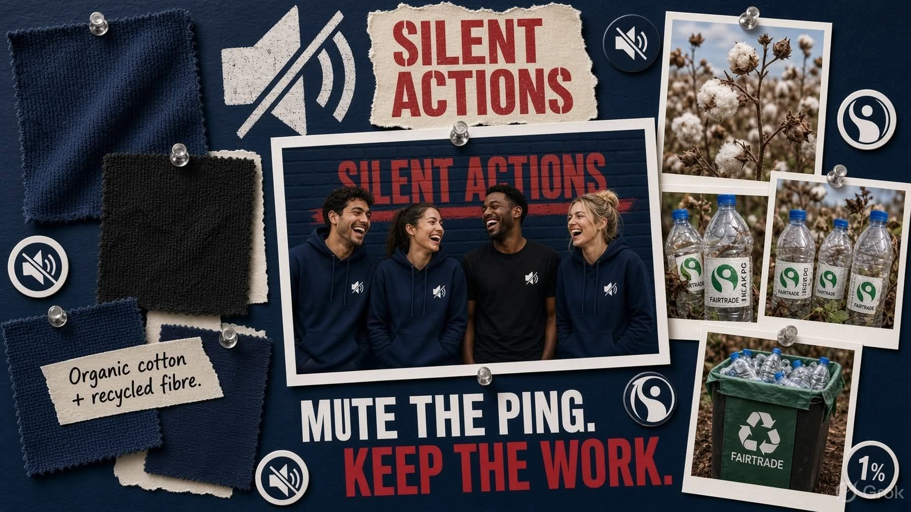

Organic cotton + recycled fibre


 Read the story
Read the story
From field and bottle.
Fairtrade cotton. Recycled PET back in the mesh. Certified B Corp. Social Traders social enterprise. We repair what we sell. We do not print a lecture on the chest — the mute mark is enough.